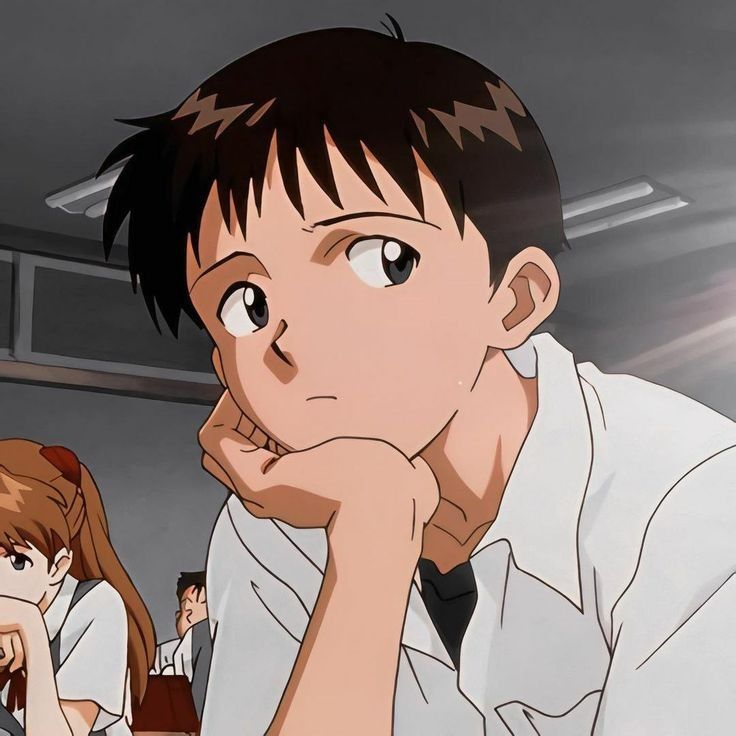
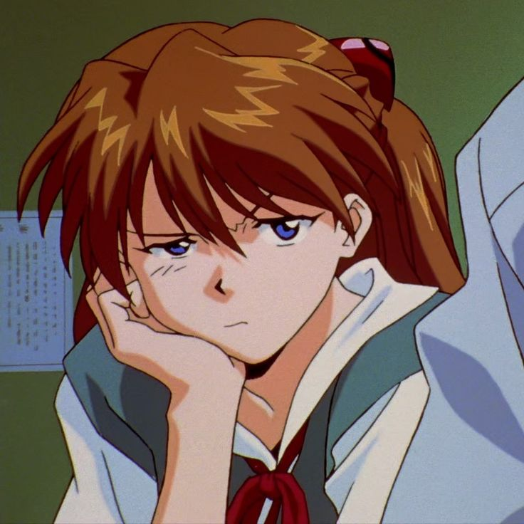
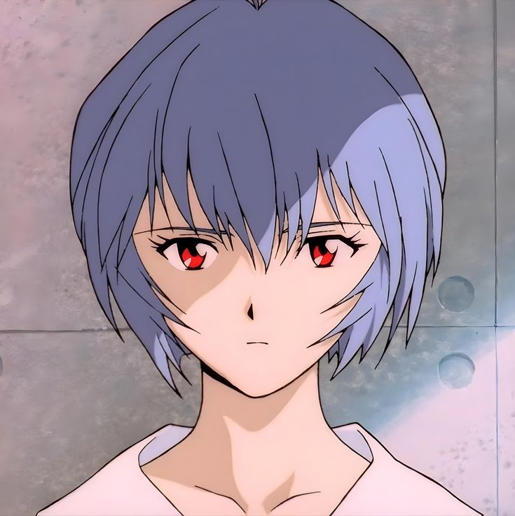
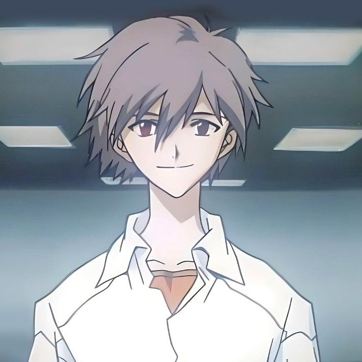
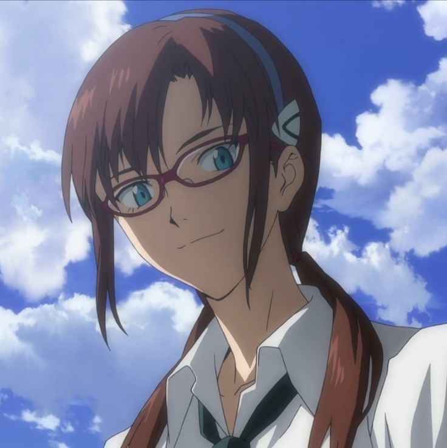
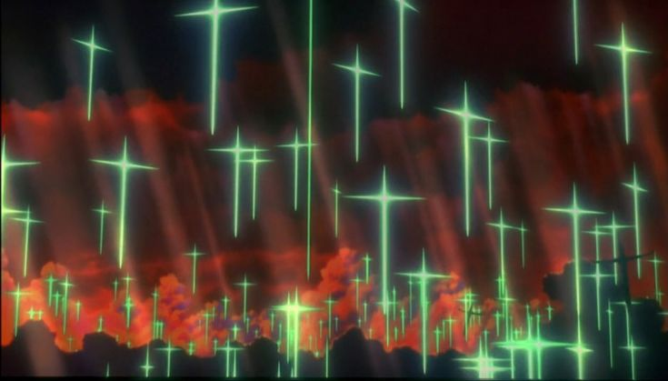
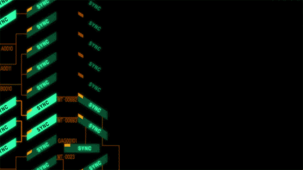

真嗣是一個14歲的少年，被父親碇源堂召喚到第3新東京市，駕駛巨大人型兵器EVA初號機，與不斷來襲的被稱為「使徒」的神秘敵人戰鬥。 他性格內向，不擅長與他人交流。年幼時失去母親又被父親遺棄，造成了他的心理創傷，而整個系列的故事可以視為是主角碇真嗣的成長故事。

明日香是一個14歲的天才美少女，駕駛EVA貳號機抗擊使徒。她個性好強、富有行動力，但是隨著劇情的發展，她 的自尊心逐漸崩潰，內心脆弱的一面被呈現出來。

綾波零是一名沉默寡言的14歲少女，駕駛著EVA試作零號機對抗使徒。她個性冷漠、彷彿沒有感情，對自己的存在 感到消極、空虛，但隨著故事推進，在與男主角碇真嗣進行一系列的互動後，她逐漸有情感化的表現。

渚薰與真嗣的消極性格完全相反，是作為真嗣克服一切自卑的角色，即理想化的真嗣。渚薰僅出場一集，他是EV A，駕駛員登場不久便成功打開主角碇真嗣閉塞的心靈。但他真正身份是人類的敵人，最終真嗣不情願地動手殺他。

在真嗣與源堂的對戰過程裡，源堂回憶與妻子凌波唯相識的場景中，透露出過去真希波與源堂、唯、冬月等人就是 舊識。在真嗣阻止了源堂，把原先受第三次衝擊毀滅的世界還原成新的世界後，在一間車站裡，成人姿態的真希波 對同樣是成人姿態的真嗣一同牽著手，一同在新世界向前邁進。

